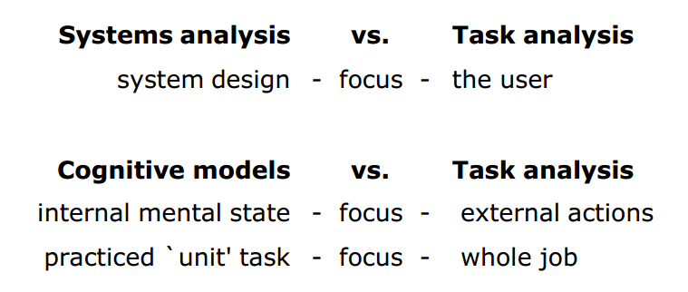
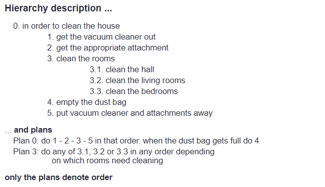

Task Analysis
F27ID Introduction to Interactive Design
2020-2021
## Overview * **What** is Task Analysis? * Task **Models** * Analysis **methods** * Examples * Questions and Discussion <aside class='notes'> Today's lecture is about Task Analysis That is, what is task analysis? Why is it so important and most crucially. How to use task analysis in interactive design. [pause] We'll discuss a variety of examples and conclude with some questions and a summary of the topic. </aside>
## **What** is Task Analysis? <aside class='notes'> We'll start off by asking the important question [pause] What is task analysis? </aside>
### **Task analysis** is * the process of learning about **users** by **observing** them in **action** * **understand** how users **perform** their tasks and achieve their intended goals Essentially, methods to analyse people's jobs: * what **people** do * what things they **work with** * what they must **know** <aside class='notes'> Task analysis is basically a process that a team goes through to determine your most crucial user goals in the app (for example, purchases, social shares, adding bookmarks, etc.) and the number of steps (or tasks) that a user must complete to get to the objective. [pause] In a nutshell, task analysis is a method of breaking a piece of work down into smaller elements and examining the relationships between the elements </aside>
#### **Example**: In order to clean the house * get the vacuum cleaner out * fix the appropriate attachments * clean the rooms * when the dust bag gets full, empty it * put the vacuum cleaner and tools away <br><br> #### To accomplish the tasks, you must know about: vacuum cleaners, their attachments, dust bags, cupboards, rooms etc. <aside class='notes'> To help you relate to the concept of task analysis look at the following example. [pause] The task of cleaning a house. [pause] Before you even begin the task you break the solution down into steps. </aside>
## Approaches to task analysis * **Task decomposition** - splitting task into (ordered) subtasks * **Knowledge** based techniques - what the user knows about the task and how it is organised * **Entity or object** based analysis - relationships between objects, actions and the people who perform them * lots of different notations/techniques <aside class='notes'> There are different approaches to task analysis [pause] For example [pause] Task decomposition: tasks are broken into subtasks and the order in which they are performed is taken into account. [pause] Knowledge-based techniques: looks at what users need to know about objects and actions in a task and how knowledge is organized. [pause] Entity-relation based analysis: in this objects and actors are identified, relationships between them and the actions they perform. </aside>
## General Method * **Observe** and understand the task * **Collect** unstructured lists of words and actions * **Organize** using notation or diagrams <aside class='notes'> As a general method when you begin the process of task analysis you should. Firstly, observe the task. Secondly, collect an unstructured list of the steps or actions. And finally, organize the notion into a set of structured stages (using either notation or a diagram). </aside>
### Differences from other techniques  <aside class='notes'> You can see the the table which shows a comparison between task analysis and other techniques. </aside>
## Aim of **Task Decomposition** * Describe the actions people do * Structure them within a task subtask hierarchy * Describe order of subtasks --- Variants: * **Hierarchical Task Analysis (HTA)** most common * Concur Task Trees CTT (CNUCE, Pisa) uses LOTOS temporal operators <aside class='notes'> The aim of task decomposition is to describe the actions people do in a structured way [pause] Variants of this include Hierarchical Task Analysis and Concur Task Trees. </aside>
## Textual HTA description  <small>Correction:Plan 0 do 1-4, when the dust bag gets full do 5.</small> <aside class='notes'> And example of a hierarchical Task Analysis using textual description for cleaning a house [pause]. As you can see from the steops, this provides an understanding of the tasks users need to perform to achieve certain goals. [pause] </aside>
## Generating the Hierarchy * 1 **get** list of tasks * 2 **group** tasks into higher level tasks * 3 decompose lowest **level** tasks further --- Stopping rules * How do we know when to stop? * Is “empty the dust bag” simple enough? * Purpose: expand only relevant tasks * Motor actions: lowest sensible level <aside class='notes'> To help you get started generating hierarchies a good rule of thumb is to follow these three steps [pause] Firstly, get a list of tasks [pause] Secondly group the tasks into higher level tasks [pause] Finally continue to decompose the lowest level tasks [pause] To help you know when you've finished [pause] You should use judgment calls, such as, is the process simple enough [pause] Are the tasks logical and in a sensible order (from high to low). </aside>
## Revision Question What does HTA stand for? * a) High-Low Testing Activity * b) Hierarchical Testing Analysis * c) Human Task Analysis * d) Hierarchical Task Analysis <aside class='notes'> OK! Quiz time: What does the acronym HTA stand for? [pause] Take a moment to pick your answer [pause][pause][pause][pause] </aside>
## Answer Answer: **d) Hierarchical Task Analysis** <aside class='notes'> Did you guess right? The correct answer is d.[pause][pause] </aside>
## Tasks as **Explanations** * Imagine asking the user the question: **What are you doing now?** --- * For the same action the answer may be: * typing ctrl-B * making a word bold * emphasising a word * editing a document * writing a letter * preparing a legal case <aside class='notes'> </aside>
### Diagrammatic HTA <aside class='notes'> </aside>
### Refining the Description Given initial HTA (textual or diagram) **How to check / improve it?** --- Some heuristics: * paired actions - e.g., where is `turn on gas' * restructure - e.g., generate task `make pot' * balance - e.g., is `pour tea' simpler than making pot? * generalise - e.g., make one cup ….. or more <aside class='notes'> Given the initial task analysis there are methods for refining and improving the process. [pause] For example [pause] using paired actions. restructuring. balancing. generalization. </aside>
### Refined HTA for **making tea** <aside class='notes'> Take a moment to study the diagram for making tea. [pause] Is this how you make tea? [pause][pause] </aside>
## Activity Think of an example (like making tea) of when you would use task analysis to breakdown a job. --- **Write** some simple tasks you might used to accomplish this job <aside class='notes'> Let's try a simple activity to get you thinking about task analysis [pause] Think of an example of when you would use task analysis to breakdown a job [pause] Once you've thought of a job, write down the steps you might used to accomplish this job [pause] Think about how you broke down the job and how you structured and prioritized each task. [pause][pause][pause] </aside>
## Summary * **Understand** Core Concept behind **Task Analysis** * Be able to **apply** task analysis to simple problems * Use task analysis to **breakdown complex tasks** <aside class='notes'> At the end of this lecture you should now know what task analysis is and how to use it. [pause] </aside>
### Recommended Reading <img src='.\images\lec07Slide31-3.png' style = ' border:0; width:300px; height:auto; ' > Interaction Design - Beyond Human- Computer Interaction <br> Chapter 14 <aside class='notes'> This week read Chapter 14 from the book on Interaction Design. </aside>
## To do this week ... * Read over the lectures * **Review** the revision questions * Work through labs/tutorial practicals * Experiment (get into good habits) * **Coursework 2 (Group)** <aside class='notes'> As usual [pause], continue to review the course material in addition to reading the recommended texts. [pause] Thank you. </aside>